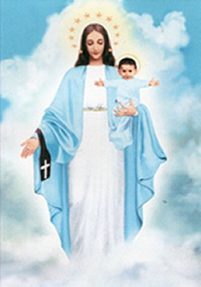

NOSSA SENHORA DO CARMO DE GARABANDAL


NOSSA SENHORA E O ARCANJO SÃO MIGUEL VIERAM AVIVAR EM NOSSO CORAÇÃO O INCOMENSURÁVEL AMOR DE DEUS POR TODA HUMANIDADE, AMOR IMENSO, QUE DE TÃO GRANDE, FEZ COM QUE ELE SOFRESSE UMA ABOMINÁVEL FLAGELAÇÃO E FOSSE CRUCIFICADO DERRAMANDO NO ALTO DO MADEIRO, SEU PRECISO, SAGRADO E DIVINO SANGUE PARA NOS REDIMIR E SALVAR. EM GARABANDAL, MAIS UMA VEZ, O SENHOR CARINHOSAMENTE E DE MANEIRA IMPRESSIONANTE, SE MANIFESTA QUERENDO QUE O SACRAMENTO DA EUCARISTIA, QUE É O SEU PRÓPRIO CORPO, SANGUE, ALMA E DIVINDADE, SEJA ACOLHIDO COM MUITO MAIS AMOR, RESPEITO E DIGNIDADE POR TODAS AS PESSOAS, PORQUE ELE INSTITUIU A EUCARISTIA PARA PERMANECER JUNTO DE NÓS.
=ÍNDICE=
 - PRELÚDIO
- PRELÚDIO
-
INÍCIO DOS ACONTECIMENTOS
- (As Meninas brincavam; O Arcanjo Confirma Sua Presença)
--
AS VISÕES AGITAM O POVO
- (O Letreiro do Arcanjo; O Arcanjo Anuncia; Padre Valentim Marichalar; NOSSA
SENHORA compareceu; A Chamada Interior; Marchas Extáticas; Provas de que o
Sobrenatural estava presente; Explicação do Letreiro; Segunda Mensagem)
-
MENSAGENS DIVINA
- (A Visão quer Educar as Meninas; Viagem a Santander; A Voz no Gravador; Dois
Sacerdotes Jesuítas; Carinho de NOSSA SENHORA; O Aviso, O Grande Milagre, O Castigo;
Morte do Padre Luis Maria)
-
ACABANDO COM A DESCRENÇA
- (O AVISO; O Sinal Permanente nos Pinheirais; Os Objetos Beijados pela VIRGEM
MARIA; A VIRGEM MARIA Realiza Pequenas Manifestações; Conchita Recebe do Arcanjo
a Sagrada Comunhão; O Mistério da Descrença)
-
O SENHOR DEUS EDUCA
- (Diálogo Admirável; Carta ao Padre Morales; Um Fato Curioso; Experiência
Religiosa; Um Nome Ligado a Garabandal; Contradições e Retratações)
-
PALAVRAS FINAIS
- (Derradeira Notícia, Publicidade do Apostolado dos Sagrados Corações)